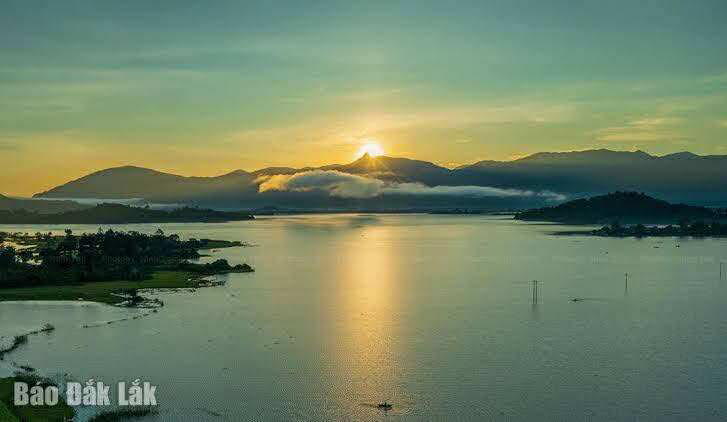
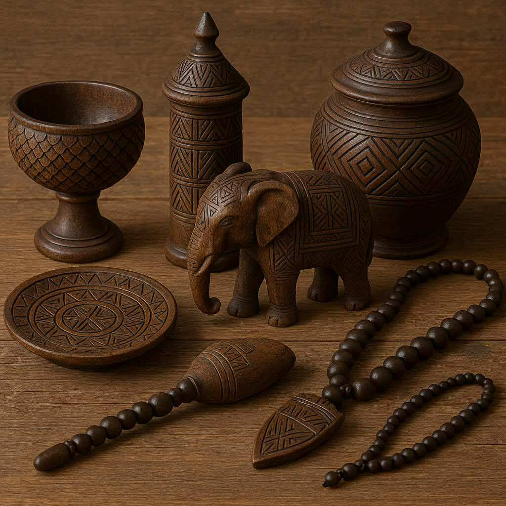
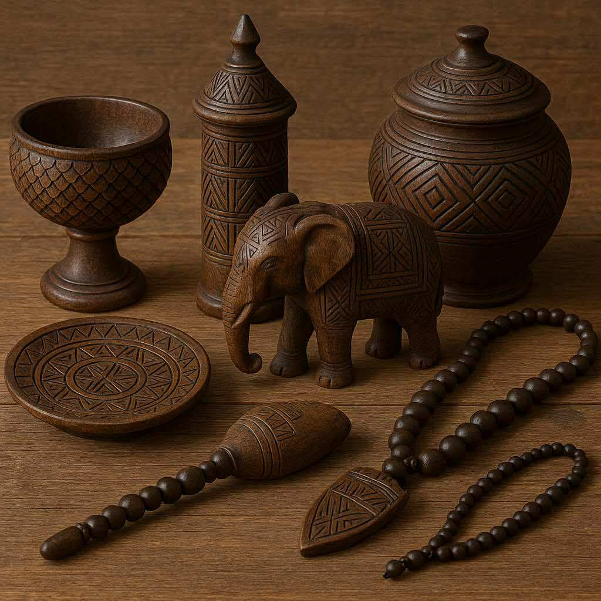

ドンエレク湖
ドンエレク湖は高原に広がる静かな湖で、朝の霧に包まれた景色は幻想的です。湖畔の少数民族村や象乗り体験、カヌー遊覧など、自然と文化を楽しめる人気スポットです。夕暮れの水面に映る光景は、訪れる人々を魅了します。
ドンエレク湖は高原に広がる静かな湖で、朝の霧に包まれた景色は幻想的です。湖畔の少数民族村や象乗り体験、カヌー遊覧など、自然と文化を楽しめる人気スポットです。夕暮れの水面に映る光景は、訪れる人々を魅了します。
ドライヌール滝は力強い水流と白い水煙が迫力満点の名瀑です。周囲は原生林に囲まれ、歩道を散策するとマイナスイオンが身体を癒します。滝のトンネルを探検できる場所もあり、大自然のエネルギーを間近で感じられる場所です。
ユニークな建築が目を引くコーヒー博物館では、世界とベトナムのコーヒーの歴史、栽培、焙煎技術を学ぶことができます。伝統楽器や生活用品も展示され、文化とコーヒーの深い結びつきを体感できます。カフェでは最高品質の味が楽しめます。
バンメトート市街はダクラクの中心都市で、活気ある市場やカフェ、ナイトスポットが集まっています。ストリートフードを味わいながら、地元の生活文化を感じられる魅力的な場所です。コーヒーの街として知られ、香り豊かなカフェ巡りも楽しめます。
民族村では伝統的な住居、工芸、民族衣装、儀式などを直接見学できます。住民との交流や体験型プログラムも豊富で、伝統文化が息づくリアルな暮らしに触れられます。観光客にとって文化理解を深める貴重な機会です。
 
